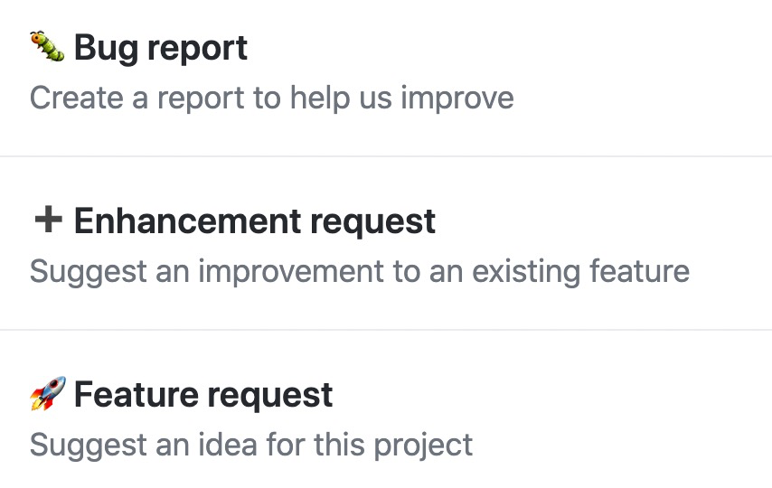
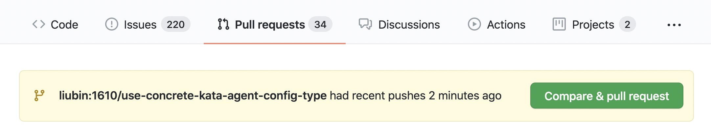
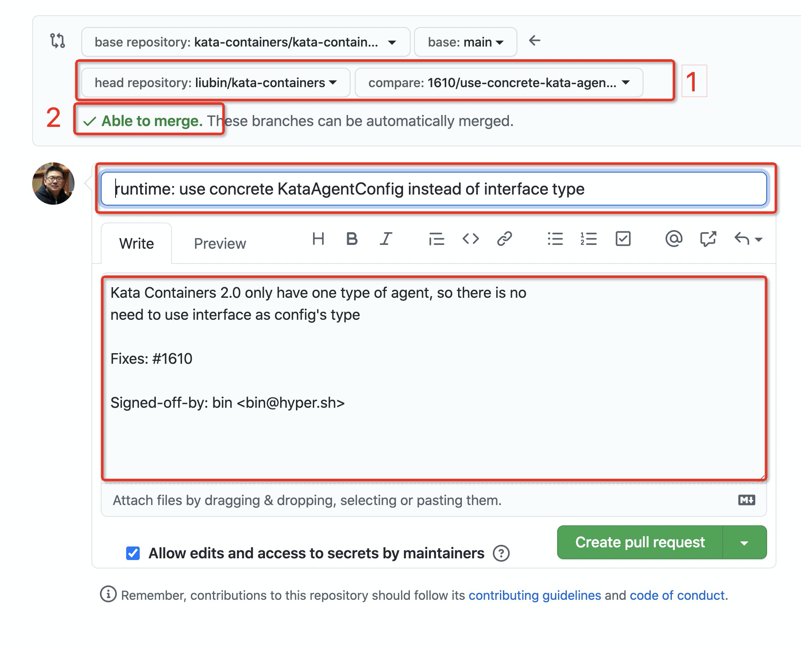

第一个 Kata Containers 的 PR
终于到了该介绍如何在 Kata Containers 社区提交自己的 PR 了，可能有些人已经等不及了。读完这一章，你也可以尝试着提交个 PR 试试。
如何找到 issue
要想提交 PR，首先得确定要修改什么。
在 Kata Containers 社区通过 GitHub 的 issue 和 PR 来管理 bug 和合并请求。首先要有一个 issue，然后以此创建自己的开发分支，在本地开发、测试通过后，就可以提交 PR 到社区并获得项目维护者的 review，如果没有问题，就可以合并代码了。
大概有如下几种情况：
- 有人提了 issue，可以去 Kata Containers 的 issue 页面查找自己刚兴趣的去 fix
- 自己使用中发现的 bug
- 自己需要的功能
- 学习、阅读源代码时候发现的问题
对于上面在阅读源代码时候发现的问题，也不完全都是 bug，也可以是简单的 typo，不合适的变量名，各种类似 golint 等对代码质量和阅读性上有影响的代码等，都可以作为修正对象。
在这篇文章中，我们以在阅读代码是发现的一个小改进为例，来看一下整体 PR 从提交到合并（merge）的过程 。
准备工作
配置 git
首先，需要对 git 进行简单的配置。
如果你的开源项目和工作项目需要分开，或者有多个账号要分开使用，那么推荐为不同的项目仓库配置不同的 git 用户信息（即标志一个代码贡献者）。
$ git config --local user.name zhangsan-lisi
$ git config --local user.email zhangsan-lisi@gmail.com
如果你已经设置了全集的用户信息（通过 --global 选项），并且不想单独设置不同的账号，则这一步可以省略。
开始我们的工作
介绍了一些提交 PR 的基础知识和前提，下面我们来进入真实的操作过程。
找到问题
在阅读源代码的时候，我们发现 kata_agent.go 中的 internalConfigure(h hypervisor, id string, config interface{})，参数 config 是一个 interface 类型，而实际函数内部，这个 interface 貌似只有一种具体类型：
func (k *kataAgent) internalConfigure(h hypervisor, id string, config interface{}) error {
var err error
if config != nil {
switch c := config.(type) {
case KataAgentConfig:
if k.vmSocket, err = h.generateSocket(id); err != nil {
return err
}
k.keepConn = c.LongLiveConn
default:
return vcTypes.ErrInvalidConfigType
}
}
return nil
}
我们可以看到，这个参数只有一种实现的具体类型，感觉没有什么必要非得定义成一个接口。
Note: 在 Kata Containers 1.x 中有多种类型的 agent，所以在给 agent 是有的配置类型中，使用了接口定义。
所以，我们可以尝试将这一类方法中的 config 从接口类型改为具体的 KataAgentConfig 类型。
按照各函数的调用关系，我们可以找到 src/runtime/virtcontainers/agent.go 中 agent 接口的如下方法都需要修改：
- configure
- configureFromGrpc
最后修改的文件包括如下几个：
- src/runtime/virtcontainers/agent.go
- src/runtime/virtcontainers/kata_agent.go
- src/runtime/virtcontainers/mock_agent.go
如果能成功通过编译和测试，就可以大致验证我们的修改没有问题，因为我们没有修改任何逻辑和流程相关的内容，只是改了一下函数签名。
之后我们就可以准备提交代码了。只是按照现在的流程，在提交 PR 之前，需要先创建 issue。
创建 PR
在 issue 页面点击 New Issue 按钮，就可以看到下面的页面。

在 Kata Containers 中 issue 分为如下 3 类：
- Bug report：影响正常工作和使用的问题
- Enhancement request：虽然也能用，但是还有改进和优化
- Feature request：完全新的功能。
这里我们只是一个小小的代码改进，所以选择第二种的 Enhancement request。
默认创建 issue 页面提供了一个简易的模板，也可以使用自己的自由格式来描述。
主要包含包括如下一些信息：
- 要干什么
- 为什么要干
- 如何干
当然，issu 内容也可以比这更详细。总之根本原则之一就是要描述准确，让别人读完能理解即可。
最后我们创建的 issue 在这里。
修改代码
同步最新代码
在创建完 issue 之后，就可以开始准备修改代码了。
首先，修改代码前需要确保自己的代码是和 upstream 同步的，即保证自己 fork 的仓库和 Kata Containers 的仓库代码一致。这个可以通过如下命令实现：
$ git checkout main
$ git remote add upstream https://github.com/kata-containers/kata-containers.git
$ git fetch upstream
$ git merge upstream/main
创建 PR 分支
首先，每一个 PR 都需要有一个单独的分支，推荐使用有意义的分支名，比如可以使用如下格式：
<issue_id>/<pr-summarty>
比如我们这里使用如下命令创建新的分支。
$ git checkout -b 1610/use-concrete-kata-agent-config-type
Switched to a new branch '1610/use-concrete-kata-agent-config-type'
我们基于最新的代码创建了一个新的分支 1610/use-concrete-kata-agent-config-type，并在此分支上修改代码。
修改代码
$ make
$ make test
提交代码
确认代码没有问题之后，就可以提交代码了。
$ git add .
$ git commit -s
commit 的 -s 参数用于 Signed-off-by 信息，这是 Kata Containers 的 commit 中需要遵循的规则。
比如这个例子中，我们输入的内容如下。
runtime: use concrete KataAgentConfig instead of interface type
Kata Containers 2.0 only have one type of agent, so there is no
need to use interface as config's type
Fixes: #1610
Signed-off-by: bin <bin@hyper.sh>
可以看出提交信息由 4 部分组成：
- 标题。这部分由 subsystem: commit summary 组成，根据具体的 pr 内容填写
- body 部分。和上面的标题隔开一行，记录具体的修改内容，用于对标题进行补充说明。可以是问题背景、如何修改、注意事项、以及其他参考资料等。
- fix 的 issue 编号。这部分以
Fixes:开始，后面跟 issue 编号，如果有多个 issue， issue 之间用逗号分隔。 - Signed-off-by：这部分通过
commit -s自动填写。
代码提交到本地后，下一步是需要 push 到 GitHub 的自己仓库之下。
首先我们可以不带参数尝试 push 一下：
$ git push
我们会看到默认的情况下这会失败，因为本地新建的分支还没有对应的远程分支。错误消息也会提示我们如何去做：
fatal: The current branch 1610/use-concrete-kata-agent-config-type
has no upstream branch.
To push the current branch and set the remote as upstream, use
git push --set-upstream origin 1610/use-concrete-kata-agent-config-type
直接使用错误信息中提示的命令推送即可：
$ git push --set-upstream origin 1610/use-concrete-kata-agent-config-type
创建 PR
代码推送到了自己 fork 的仓库后，就可以创建 pr 了。
到 Kata Containers 的 pr 页面 ，如果我们刚才 push 了分支到 fork 的仓库，这个页面会智能的提示你有新分支可以用了创建 pr，如下图所示：

直接点击 Compare & pull request 就可以进入到创建 pr 的页面了。如果没有上面的提示也没关系，你也可以点击 New pull request 进入这个页面。
创建 pr 的页面大致元素如下：

默认这个页面会使用代码中的提交信息分支填充一些信息。我们这里只有一个 commmit ，因此不需要做额外的修改就可以直接创建 pr ，如果你的 pr 修改内容很多，可能需要自己根据实际情况来补充完整。
上图 “1” 处表示的是从自己 fork 的仓库合并到 Kata Containers 的仓库， “2” 里绿色的 Able to merge 表示代码没有冲突，可以合并到目标分支（这里为 main 分支）。如果你这里显示的不是这样的结果，可能需要重新 rebase 一下主分支，以确保是在最新的代码上做的修改。
最后我们创建的 pr 在这里。
要想让你的代码获得合并，必须满足如下两个条件：
- 所有必须的 CI 测试通过
- 有 2 个或 2 个以上的项目维护者的 approve 。
CI 检查
CI 分两大类
- 使用 GitHub Action 的各种构建、静态检查和 UT 等验证
- 基于 Jenkins 的集成测试，包括基于最新代码和PR修改内容的所有组件的构建、各种环境（K8s、contaienrd、CRI-O、VFIO、QEMU、CLH、Firecracker等）的真实负载测试
对于各种静态检查，常见的问题有如下：
- commit message 不符合标准
- 没有代码格式化
- 单测不通过
对于这类错误，在 pr 页面底部的状态详情部分都会显示出来。对于失败的检查，可以点击后面的 Details 链接查看具体的错误信息。
如果真的有 CI 检查的错误，需要修正这些错误后，再次提交代码。这时候可以在原提交的基础上使用 --amend 重新提交，并使用 push -f 来强制更新远程分支。
在所有检查都通过后，就可以等待其他人的 review 和集成测试的结果。
代码 review
具有 review 权限的 Kata Containers 维护者负责 reivew 所有的 pr。有任何问题，他们都会直接在 GitHub 上以 comment 的情况提出来。 按 comment 需要进行的处理方式，主要分为两类：
- 讨论类
- 修正类
讨论类一般指 reivew 者所提出的疑问，比如这里为什么这么实现等。这类问题需要 pr 提交者进行回答和解释。
修正类指的是确实代码或文档存在错误，或可以改进的地方，这类问题需要 pr 提交者重新修改代码，提交后更新 pr 的内容。
集成测试
集成测试由项目维护成员来通过 /test//test-ubuntu 等指令触发。集成测试有两种错误，一种是由于环境导致的错误，比如网络暂时的不可用等，这类错误都是可以重试的。另一类就是确实代码有问题，没有得到预期的结果，导致功能测试失败。这类错误需要 pr 提交者调查、修正后重新提交代码。
集成测试的代码都在 kata-containers/tests 下，每种测试都需要在全新的环境下从源代码开始构建各种二进制、guest 镜像等测试对象，所以整个耗时一般都在 30 - 60 分钟。
当然，如果只是修改了文档的话，则集成测试会很快返回，不会进行没有必要的测试。具体实现和方法可以参考 tests 仓库的 ci-fast-return.sh 文件 。
集成测试采用了 Jenkins 执行，每个测试任务的日志都可以在任务页面的 [Build Artifacts] 中找到，主要包括如下内容：
- kubelet 日志（如果包括 k8s 测试的话）
- containerd 日志（如果使用了 containred 的话）
- CRI-O 日志（如果使用了 CRI-O 的话）
- kernel 日志
- containerd-shim-kata-v2 日志
- kata-collect-data：测试技术后收集的系统（操作系统+额外依赖的软件+Kata Containers）信息
如果测试失败，可以下载相应的日志进行调查。
代码修改
不管是 reivew 人员指出的错误，还是在 CI 测试中发现的错误，都需要开发者在本地重新修改代码。
如果只有一个提交，可以直接使用 git commit --amend 和 git push -f 即可。如果是一个 pr 多个提交，则可能需要找到相应的提交进行 --amend 处理，本文中不对这样的例子进行说明。
关于提交粒度：对于比较大的 pr ，建议以单个功能点、单个顶层文件（src/runtime, src/agent, docs）分开提交，同时需要确保每个 commit 都能编译通过。
代码合并
如果所有必须的 CI 检查和测试都通过，也有足够数量的（目前是 2 人）项目维护者 approve 了 pr，则 pr 就可以合并了。合并只能有项目维护者执行。
合并前的 pr 状态是这样的：

从上图中，我们可以看到：
- Changes approved： 表示已经有足够多的项目维护者 approve 了代码
- All checks have passed： 所有的 GitHub actions 检查、CI 集成测试都通过
这时候，具有合并代码权限的项目维护者就可以通过 Merge pull request 按钮合并 pr 了。
代码合并后，对应的 issue 就自动的被 close 掉了。如果没有自动 close，则需要手工来 close 这个 issue。 Issue close 后，就算完成了一个简单的 pr 从开始修改、创建到合并的全部流程。
一些小技巧
很多项目维护者并不是专注于某一 issue 或 pr ，所以必要的时候，可能需要 pr 提交者主动“催”一下，可以在 pr 的 comment 栏里使用 @ 来提醒你想要联系的项目维护者。
小结
这里我们以一个实例来介绍了如何创建一个 issue ，并进行修改、提交 pr，直到最后代码合并。当然这里是一个简单的 pr 流程，中间没有太多的变动。实际情况，根据 pr 的复杂程度和重要性，整个持续过程可能会达到数周或超过一个月甚至更久，可以说是一场持久战，这段时间都需要代码提交者和reivew者经过多次的讨论和确认，才能最终实现代码的合并，这也是一项考研持久性和耐力的活动。当然，毕竟这样的 pr 还是很少的。